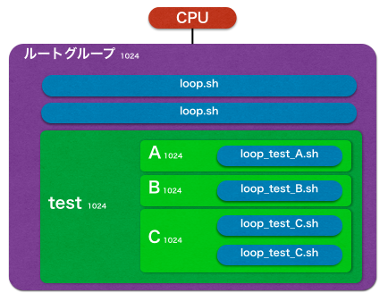

cgroup の cpu.shares を検証した
cgroup には複数のサブシステム（controller）があるが、その中の cpu.shares について検証してみた。
cpu.shares とは
cpu.shares を設定すると、タスクが使用できる CPU 時間の割合を変更することができる。
具体的に言うと、A B２つのグループを作り、cpu.shares をそれぞれ1024 2048とした場合、B のグループにいるプロセスが、A のグループにいるプロセスより 2倍 CPU を使えるようになる。以下、実行例。
|
|
グループ B に登録した PID:2836 のプロセスが、グループ A に登録した PID:2835 の 2倍 CPU を使用している。
今回の疑問点
これだけなら、わかりやすいが、以下の点が不明だったので実際に検証してみた。
- グループ内に複数プロセスがいる場合どのように CPU が割り振られるのか
- ルートグループに属するプロセスの CPU の割り振りはどうなるか
環境
- マシン: Vagrant(CPU コア1)
OS:
- CentOS6.6 (2.6.32-504.16.2.el6.x86_64)
- CentOS7.1 (3.10.0-229.el7.x86_64)
今回検証したグループ構成
- CPU のルートグループ配下に
testグループを作成する - test グループ配下に、
ABCグループを作成する - 作成した全てのグループの
cpu.sharesは、全て1024と同じにする
- CPU のルートグループ配下に
環境構築手順(CentOS6.6)
123456789101112131415161718[root@localhost vagrant]# mkdir /cgroup[root@localhost vagrant]# mount -t cgroup -o cpu cgroup /cgroup/[root@localhost vagrant]# mkdir -p /cgroup/test/{A,B,C}[root@localhost vagrant]# head /cgroup/{,test/{,{A,B,C}/}}cpu.shares==> /cgroup/cpu.shares <==1024==> /cgroup/test/cpu.shares <==1024==> /cgroup/test/A/cpu.shares <==1024==> /cgroup/test/B/cpu.shares <==1024==> /cgroup/test/C/cpu.shares <==1024CPU を使用するシェルスクリプト
loop.sh 1234CGROUP=$(mount|grep -w cpu|awk '{print $3}')echo $$ > $CGROUP/tasks || exit 1while : ; do : ; done12345loop.sh & # ルートグループに自身の PID を登録し無限ループloop_test.sh & # test グループに自身の PID を登録し無限ループloop_test_A.sh & # test/A グループに自身の PID を登録し無限ループloop_test_B.sh & # test/B グループに自身の PID を登録し無限ループloop_test_C.sh & # test/C グループに自身の PID を登録し無限ループ自分自身の PID をスクリプト名にあったグループに登録し、無限ループを行うシェルスクリプト。
検証１
A グループに、無限ループするプロセスを一つ登録した場合の CPU 利用状況。
|
|
ルート->test->Aと最下層のグループに登録されているが、CPU は 100% 利用できる。
検証２
A B Cの各グループに、無限ループをするプロセスを一つづつ登録した場合の CPU 使用状況。
|
|
- 各グループの cpu.shares の値は同じなので、均等に CPU を 1/3 (33.3%)づつ使用している。
検証３
検証２に加え、C グループに、もう一つプロセスを登録した場合の CPU の利用状況。

|
|
- グループ A, B に割り当てられている CPU 時間は変わらない
- 検証２でグループ C に割り当てられていた CPU 時間(33.3%)は、２つのプロセス（2570,2573）に分配されている
検証４
検証３に加え、testグループに無限ループするスクリプトを一つ、追加登録した場合の CPU 利用状況。

|
|
- CPU 時間は、test グループの１つのプロセス
1887とグループABCで、４等分(25%)されている - C グループ 配下のプロセスは、４等分された CPU時間(25%) を分配して利用している
検証５
検証４に加え、さらにtestグループに無限ループするスクリプトを一つ、追加登録した場合の CPU 利用状況。
|
|
- CPU 時間は、test グループの２つのプロセス
18921887とグループABCで、５等分(20%)されている - test グループの２つのプロセス
18921887は、それぞれ５等分された CPU時間(20%) を利用できる
検証６
検証３に加え、ルートグループに無限ループするスクリプトを一つ、追加登録した場合の CPU 利用状況。
|
|
- CPU 時間は、ルートグループの１つのプロセス
1898とtest グループで、２等分(50%)されている - test グループ 配下のプロセスは、２等分された CPU時間(50%) を分配して利用している
検証７
検証６に加え、さらにルートグループに無限ループするスクリプトを一つ、追加登録した場合の CPU 利用状況。

|
|
- CPU 時間は、ルートグループの２つのプロセス
18981903とtest グループで、３等分(33%)されている - ルートグループの２つのプロセス
18981903は、それぞれ３等分された CPU時間(33%) を利用できる - test グループ 配下のプロセスは、３等分された CPU時間(33%) を分配して利用している
まとめ
検証７の結果を見れば、cpu.shares の振る舞いがだいたいわかる。
test グループ配下のプロセスが利用できる CPU時間は、ルートグループに属するプロセス数や CPU 利用状況によってかわるので、リソース設計が難しい。
このため、test グループの CPU時間を担保したい場合は、以下のような感じで、一旦ルートグループ配下の全プロセスを別のサブグループ配下に移動してあげればよさそう。
|
|